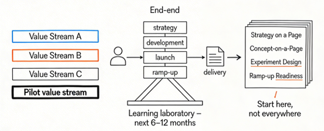
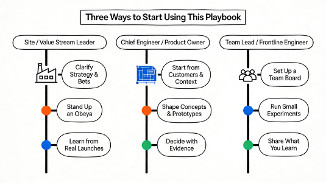
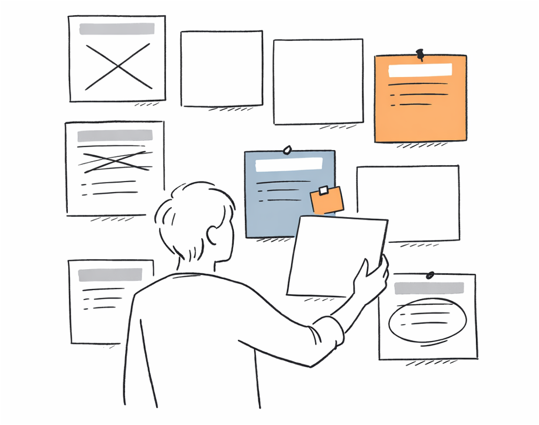
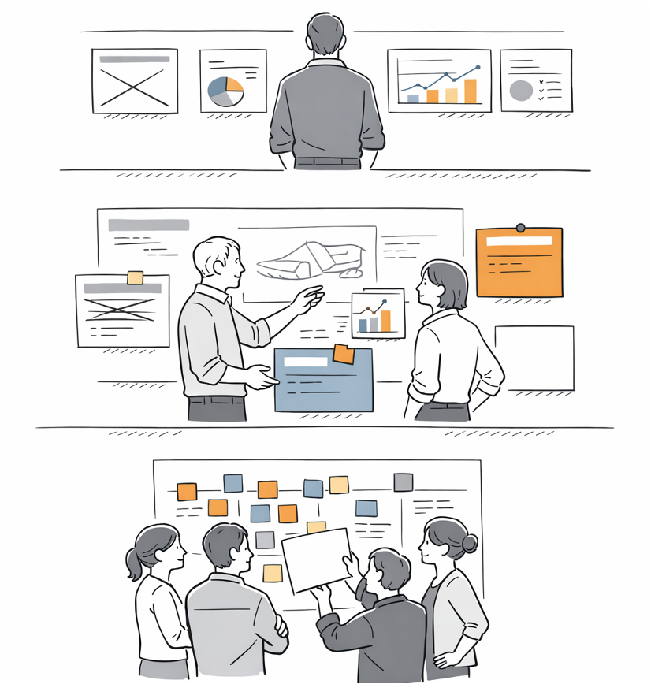
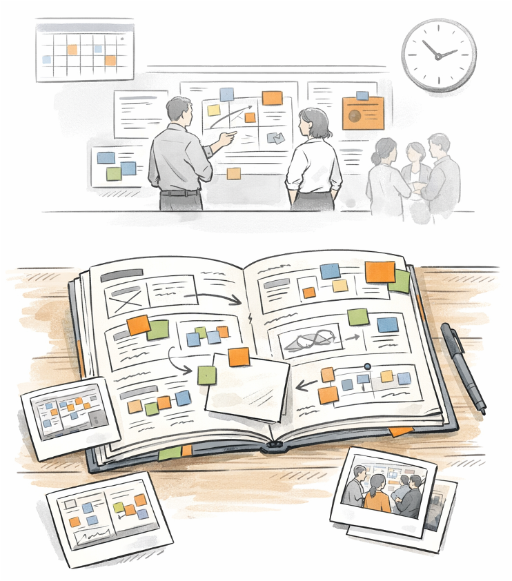

Chapter 10
From Reading to Doing
LPPD is not a destination you arrive at; it is a way of travelling.
Up to now, you have seen plays, stories, and canvases that describe what Lean Product and Process Development can look like in practice. Chapter 10 helps you choose where to start, how to start small, and how to grow your own version of this system without turning it into a change programme that collapses under its own weight.
We begin with one value stream as your learning laboratory, then offer three starter journeys tailored to different roles. The final sections focus on working with the toolkit rather than for it: introducing tools as experiments, standardising only what proves useful, and reviewing your playbook regularly so it stays alive, local, and yours.
Section 10.1
Start From One Value Stream
The safest way to put this playbook to work is to start from one concrete value stream, not from your whole organisation. Pick a flow of work where customers, products, and operations are visible end to end — something important enough that people care, but not so political that every move becomes a battle.

Choose a Meaningful Pilot
List a few candidate value streams or product families and ask three questions about each:
Does this really matter to customers and the business?
Can we see and influence most of the flow?
Do we have a leadership team willing to learn in public?
The right pilot is usually the one where the answers are “yes, mostly, and probably” — not the easiest corner case and not the flagship under a spotlight. Make an explicit, time-bound choice: “For the next 12 months, this is our LPPD learning laboratory.”
Map Your Current Plays
Before adding anything new, take stock of how you already work. On one page, sketch the current “plays” in this value stream: how strategy is set, how projects start, how customer needs are understood, how decisions are taken, how launches happen.
You will likely discover that you already do partial versions of many plays in this book, just with gaps or inconsistencies. Name these honestly — “our current concept play”, “our current ramp-up play” — so you can improve them rather than pretending you are starting from zero.
Define a 6–12 Month Learning Challenge
Frame a learning challenge for this value stream that is big enough to matter but small enough to be testable. Instead of “implement LPPD”, say things like:
“In the next year, we will halve late design changes at ramp-up.”
“We will run every major decision off explicit experiments.”
“We will launch the next two variants with no firefighting weekends.”
Section 10.2
Three Starter Journeys
Different people will come to this playbook from different places. Rather than prescribing one rollout path, this section offers three starter journeys you can choose from or adapt. Each starts small, uses a handful of plays and canvases, and assumes you are working in the pilot value stream you chose in 10.1.

Starter journey for
Site or Value Stream Leader
Your job is to give people a clear direction and a place to see the work together. Start by making strategy and bets visible, then give teams a room and rhythm to connect day-to-day work to that direction.
1. Clarify purpose and bets
Use “Strategy on a Page” and the Portfolio / Next Bets Radar to agree: which value streams matter most now, which bets you are actually placing, and what you will not do for the next 6–12 months. Turn this into a simple, shared picture you can keep pointing back to.
2. Stand up a simple obeya
Using the Obeya Overview Canvas, sketch a first version of your room or virtual space. Start with a light cadence (weekly 60-minute review plus short daily huddles) and refine as you learn what conversations the room makes easier.
3. Anchor improvement in real launches
Pick the next launch or ramp-up and treat it as your main learning engine. Use the Prototyping Ladder, Pilot & Pre-Series Plan, and Ramp-Up Readiness canvases to make late-stage risks and readiness visible. Spend time where work is happening — using these tools to ask better questions, not demand prettier reports.
Starter journey for
Chief Engineer or Product Owner
Your job is to hold the whole product and value stream in view, and to turn uncertainty into structured learning rather than wishful thinking. Start with customers and context, then shape concepts, prototypes, and evidence.
1. Start from customers and context
For your pilot value stream, pick two or three critical situations and capture them with the Customer in Context and Problem Framing canvases. Use these as anchors in every major conversation about concepts, scope, and variants so debates stay grounded in real use, not abstract personas or opinions.
2. Shape concepts, prototypes, and learning plans
For each serious option, sketch a Concept on a Page. Build a Prototyping Ladder that ties risks to experiments, using the Experiment Design Canvas for the most important tests. Aim to decide architectures and key interfaces based on evidence, not habit.
3. Connect decisions to evidence-based milestones
For your main gates (concept selection, architecture freeze, launch readiness), create Evidence-Based Milestone canvases that spell out what questions must be answered and what evidence you need. Use these to shift governance conversations from “Are we on time?” to “Do we know enough to decide responsibly?”
Starter journey for
Team Lead or Frontline Engineer
Your job is to make the work and the problems visible, and to turn everyday issues into learning cycles that move the value stream forward. You do not need permission to start small.
1. Use a team board and experiment design as your basic kit
Set up a Team Visual Management Board: a simple view of work (backlog, in progress, done), a few key measures, and a corner for problems and experiments. Any time someone says “we should test this”, reach for the Experiment Design Canvas and take 10–15 minutes to write down the decision, hypothesis, method, and what you’ll do with the result.
2. Run short learning cycles on real problems
Pick one or two recurring problems and treat them as weekly learning cycles: plan a small change or test, do it, check the effect, act on what you learn. Use the Learning Cycle Tracker when several people are involved.
3. Grow your influence by making learning visible
Share what you learn in the obeya or with your chief engineer: photos of boards, before/after examples, short stories of “we tried X, saw Y, decided Z.” Over time, you become the person who can show — not just tell — how LPPD thinking changes decisions.
Section 10.3
Working With the Toolkit, Not For It
The point of this toolkit is to help you think and decide, not to give you more forms to fill in. If you treat the canvases as mandatory templates, you will recreate the same bureaucracy you were hoping to escape, just with nicer diagrams. If you treat them as experiments in how you work, you can keep the useful bits and quietly throw away the rest.

Principles Over Forms: Keeping the “Why” Visible
Every canvas in this book exists to force a small number of uncomfortable but vital questions. When you introduce a tool, start by naming which question it is meant to keep in the room, then show the form.
Who is this really for?
Customer and problem understanding canvases exist to ground every conversation in real use, not abstract personas.
What must we learn before we decide?
Experiment and milestone canvases exist to surface uncertainty before commitment, not after.
How will this choice affect flow?
Value stream and variant canvases exist to make systemic consequences visible before they become emergencies.
How to Introduce a New Canvas: Test, Adapt, Then Standardise
In this way, your toolkit becomes a living part of your development system — always changing but always anchored in the same LPPD principles.
Section 10.4
Growing Capability, Not Just Results
The plays and canvases in this book can help you hit better numbers. But if all you get is one or two improved launches, you are leaving most of the value on the table. The deeper aim is to grow your organisation’s capability to design products and value streams — so that good results become the natural outcome of how you work, not the product of heroics.

From “Projects” to a Development System
Most organisations treat each new product or variant as a one-off project: assemble a team, push hard, fix the fallout, disband, repeat. LPPD invites you to see product and process development as a system: a stable way of working in which strategy, customer understanding, concept creation, experimentation, ramp-up, and learning from lifecycle all fit together.
As you use the plays, pay attention to the connections: how evidence from experiments shapes milestones, how ramp-up learning feeds back into platforms, how obeya links strategy to teams. Over time, your goal is not to run “better projects,” but to make it normal that every project runs inside a stronger, more coherent system.
Coaching Leaders and Experts
No toolkit survives contact with leadership habits. If managers still ask only “Are you on time and on budget?”, the plays will slowly turn into prettier versions of old reports. Growing capability means helping leaders and experts change the questions they ask.
“What problem are you solving?”
“What did we learn from this experiment?”
“How will this choice affect flow?”
As these questions become routine, leaders stop managing by opinion and start coaching people to think scientifically about their work.
Building Your Own Playbook
The most powerful sign that capability is growing is when teams start to extend or rewrite the playbook themselves. When a chief engineer adapts the Concept on a Page for a new technology, or a factory team invents a better ramp-up board for their context, pay attention: this is your system learning.
Capture those adaptations, name them, and share them across value streams. Over time, you will end up with a small set of shared principles and a family of local plays and canvases that look like your products, your flows, your people — not like a book. At that point, this playbook has done its job.
Section 10.5
Keeping the Playbook Alive
A playbook is only useful while it stays close to the work. As soon as it becomes something people quote in presentations but ignore in decisions, it is dead weight. Keeping this playbook alive means treating it as a living part of your development system: reviewed, pruned, refreshed, and reshaped by the people who use it.

An Annual “Playbook Review”
Once a year, gather a cross-section of people who have actually used the plays and canvases. Give yourselves half a day and ask three questions:
Which plays and tools did we really use?
Which ones changed decisions or behaviour?
Which ones felt like extra work for little value?
From there, decide what stays as core house style, what moves to the “library” of optional tools, and what you will retire. It is better to have a small, sharp set of plays that people pull for than a thick catalogue nobody opens.
Capturing Stories, Not Myths
Most “best practices” die because they are told as polished myths. What keeps a playbook alive are real stories: photos of boards in use, sketches from the wall, short accounts of “we tried this here, this is what happened, this is what we changed.”
Build a modest, shared archive where people can browse examples from other value streams. Aim for something more like a jam-session notebook than a museum: messy, current, clearly rooted in actual work. When introducing a play to a new team, start with one of these stories from your own organisation, not a generic case from elsewhere.
An open invitation
Treat this playbook as an invitation, not an order. Invite people to try one play, one canvas, one small experiment that might make their work clearer or their decisions better. Invite them to suggest changes when something does not fit. Invite them to teach a colleague what they have learned.
LPPD is not a destination you arrive at; it is a way of travelling. If you keep asking “What problem are we really trying to solve? What do we need to learn next? How can we see the work and the flow more clearly together?” — the specific tools will come and go, and that is fine.
What matters is that, year by year, your ability to design products, processes, and value streams keeps getting stronger — and that more and more people see themselves as active contributors to that journey.